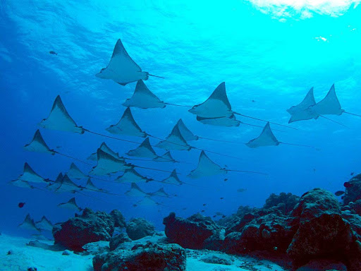

Komodo Island
and the best place in komodo island
29 Desember 2021

Indonesia mempunyai berbagai kekayaan alam yang telah dikenal hingga kemancanegara, salah satunya adalah Pulau Komodo yang terletak di Kepulauan Nusa Tenggara Timur. Dimana pulau ini merupakan salah satu pulau yang masuk kedalam situs warisan dunia UNESCO yang harus dijaga kelestariannya. Dimana pulau ini merupakan habitat kadal terbesar didunia, yaitu Komodo. Tidak hanya itu saja selain wisatawan dapat melihat makhluk purba spesies kadal terbesar didunia, wisata di pulau komodo juga menyajikan panorama alam yang eksotis seperti perbukitan dan padang sabana yang mengagumkan. Oleh karena itu pulau-pulau disekitar Pulau Komodo juga sangat menarik untuk dikunjungi oleh wisatawan baik didalam negeri hingga ke mancanegara. Berikut merupakan spot yang dapat dikunjungi wisatawan ketika berkunjung ke Pulau Komodo
PULAU RINCA
Pulau Rinca juga merupakan salah satu pulau habitat komodo meski tidak sebanyak komodo yang ada di pulau Komodo, dimana di pulau ini wisatawan dapat menjelajahi beberapa trek baik panjang ataupun pendek untuk melihat komodo di habitat aslinya. Selain melihat komodo di pulau ini wisatawan juga dapat bersantai menikmati keindahan alam seperti menikmati pasir putih, mendaki bukit, hingga menyusuri hutan bakau.
GILI LAWA
Gili Lawa merupakan sebuah pulau kecil yang berada di sebelah utara Pulau Komodo. Dimana di Pulau ini wisatawan dapat menikmati keindahan laut dangkal yang berwarna biru kehijauan, yang mana pulau ini juga menjadi spot Snorkeling favorit karena keindahan panorama bawah laut dengan banyaknya spesies biota laut dan terumbu karang. Tidak hanya itu di pulau ini wisatawan dapat menikmati hamparan rumput kehijauan diperbukitan, dimana ketika sudah memasuki bulan Agustus atau September hamparan padang rumput ini akan mengering kemudian berubah warna menjadi coklat kekuningan sehingga membawa suasana seperti berada dipadang sabana.
PINK BEACH

Seperti namanya pantai ini menyuguhkan hamparan pasir pantai yang berwarna merah muda, sehingga menjadi destinasi favorit para wisatawan. Pink Beach sendiri berada dicekungan bagian selatan dari Pulau Komodo dimana merah muda pada pasir pantainya berasal dari batuan coral yang hancur dilautan, atau beberapa peneliti mengatakan bahwa pasir yang berwarna pink tersebut berasal dari hewan mikroskopik yang disebut firaminera. Selain menikmati keindahan pantai secara langsung wisatawan juga dapat menikmati keindahan Pink Beach dengan mendaki tebing yang berada disekitar pantai, sehingga panorama yang dinikmati dapat menjadi lebih menakjubkan.
Manta Point
Manta Point terletak di Loh Liang, Taman Nasional Komodo dimana objek wisata ini dapat ditempuh dengan waktu 25 menit dari Pink Beach. Dimana disini wisatawan dapat bercengkrama langsung dengan Manta, yaitu spesies ikan pari terbesar di dunia. Wisatawan dapat melihat pari manta melalui kapal atau melalui diving dan snorkeling sehingga wisatawan dapat berenang dan menyentuh secara langsung kawanan pari manta yang ada di pulau komodo, dan tentunya hal ini dapat dilakukan dengan pengawasan oleh guide profesional.
Itu dia beberapa tempat wisata yang dapat dinikmati wisatawan baik dalam negeri dan mancanegara ketika berkunjung ke Pulau Komodo. Semoga dengan adanya informasi ini pembaca sekalian dapat tertarik untuk berlibur didalam negeri sendiri yaitu Indonesia yang mempunyai keindahan alam yang tidak kalah kerennya seperti yang berada di luar negeri sana.
About Indonesian Tourism
Indonesia mempunyai beragam destinasi wisata yang dapat dijelajahi oleh para wisatawan dalam negeri serta mancanegara. Untuk mendukung berkembangnya pariwisata di Indonesia hingga dikenal kemanca negara kita dapat melakukan langkah awal dengan menjelajahi destinasi wisata yang ada di Indonesia dibandingkan dengan bepergian keluar negeri. Oleh karena itu wisatawan dapat mencari destinasi wisata diberbagai tempat di Indonesia melalui situs Wonderful Indonesia yang merupakan salah satu program kementerian pariwisata untuk mempromosikan berbagai destinasi wisata yang ada di Indonesia agar dapat dikenal hingga kemanca negara.